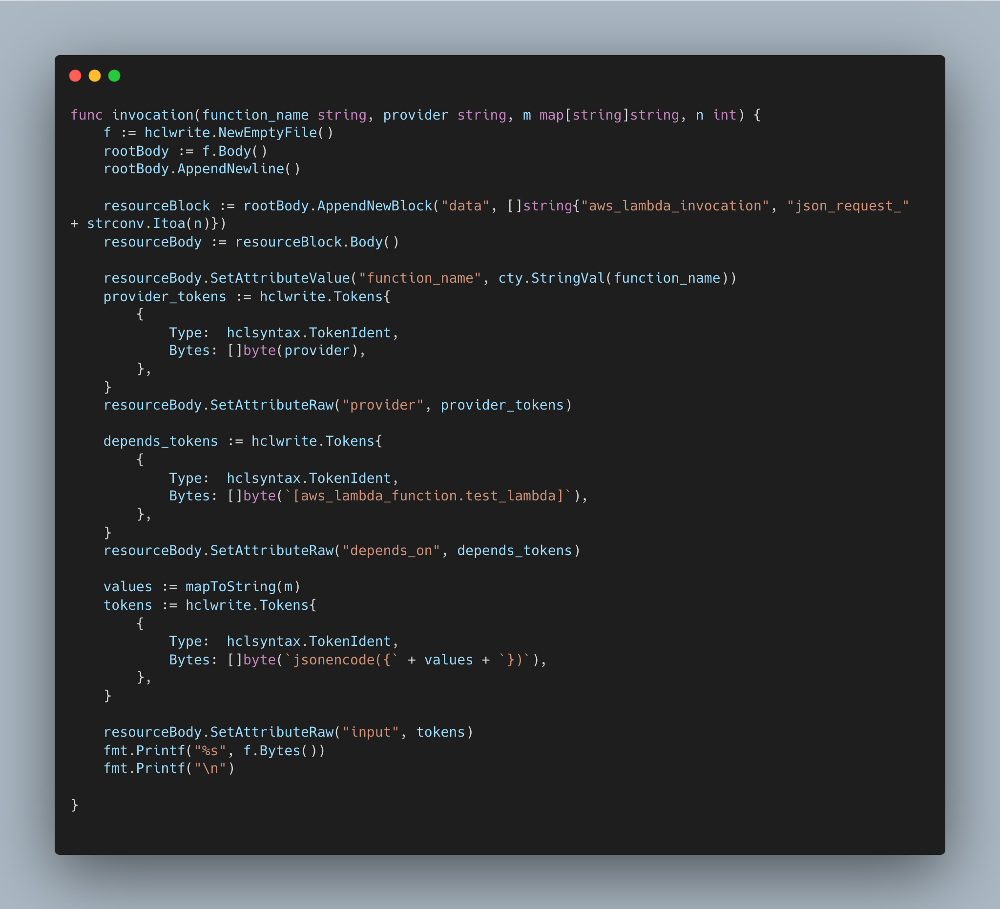
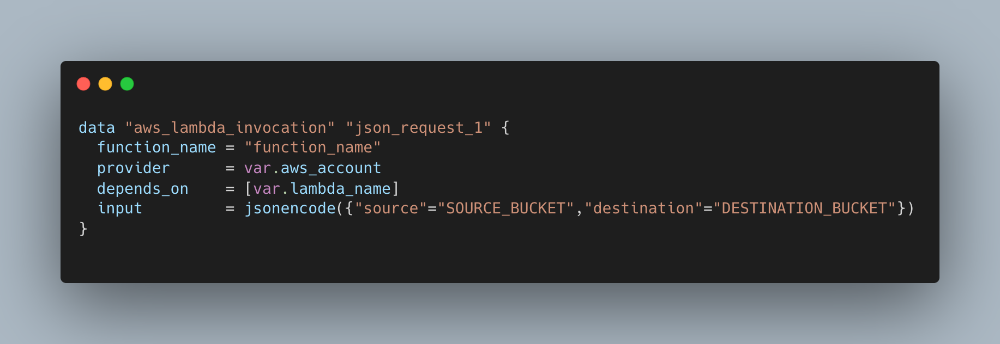

produces this

Introduction
At the end of May we were tasked with decommisioning resources on the legacy AWS accounts. Not only this but to create a documented and repeatable procedure.
After a discussion with the tech lead we decided to use a certain set of buckets to test our procedure.
Me and the other apprentice decided to seperate concerns. He would focus on programmatically removing the buckets and I would work on a way of migrating the important data kept within them.
My line manager suggested that I look into using terraform to accomplish this as it would be self documenting and repeatable.
This seemed reasonable so I started work on a golang program that could generate hcl code using the hclwrite and hclsyntax and libraries
Architecture
When run tfmigrate creates a list of aws_lambda_invocation blocks.
The ready made terraform creates buckets accross two specified accounts as well as a lambda capable of assuming roles in both.
then when terraform apply is run on the file of invocation blocks, the migrations are taken care of.